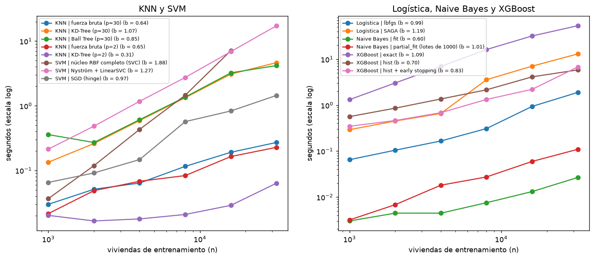
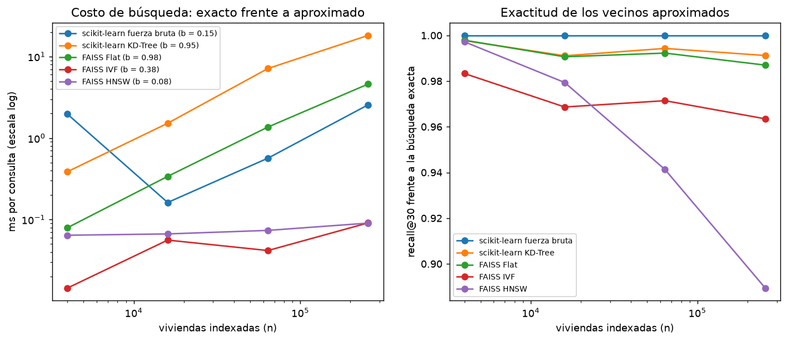

4. Optimización computacional#
Autores: María Carolina Cantillo Orozco (200179105) y Juan Camilo Oñoro Araujo (200177329)
Qué responde este capítulo
Pregunta. ¿Cuánto cuesta entrenar y usar cada modelo, coincide con su complejidad teórica y qué versión optimizada conviene?
Respuesta corta. La teoría predice bien el escalamiento: el SVM de núcleo completo crece casi
cuadráticamente (b = 1.88) y XGBoost hist es 9 veces más rápido que exact con el mismo F1. Pero no toda
versión «optimizada» conviene con estos datos: lbfgs le gana a SAGA, la búsqueda exhaustiva de KNN a KD-Tree, y
FAISS solo compensa con cientos de miles de viviendas. El 91 % del tiempo de una evaluación es construir
árboles.
El presupuesto de cómputo condicionó el diseño (capítulo 2): con las 257 273 viviendas, la validación anidada de las 156 combinaciones costaba unas 630 horas-CPU. Este capítulo mide, para cada familia de modelos, una versión estándar y una optimizada, y contrasta el orden de complejidad teórico con el tiempo medido.
Método. Se entrenan las variantes con n = 1 000 a 32 000 viviendas (las mismas p variables del pipeline
tras el preprocesamiento), con la mediana de 3 repeticiones del tiempo, la memoria pico (tracemalloc) y el F1
macro en un conjunto fijo de 10 000 viviendas. El exponente empírico b sale de ajustar
\(\log t = a + b \log n\): un algoritmo \(O(n)\) debería dar \(b \approx 1\), uno \(O(n^2)\), \(b \approx 2\).
4.1 Complejidad teórica#
Modelo |
Estándar |
Optimizado |
Entrenamiento |
Inferencia (por consulta) |
|---|---|---|---|---|
KNN |
búsqueda exhaustiva |
KD-Tree / Ball Tree · FAISS (IVF, HNSW) |
O(1) (exhaustiva) · O(n·log n) (árbol) · IVF: O(n·p·iter) para k-medias · HNSW: O(n·log n) |
O(n·p) · O(log n) en dimensión baja, se degrada hacia O(n) con p alto · IVF: O((n/√n)·nprobe·p) · HNSW: ≈ O(log n) |
Logística / Ridge / Lasso |
lbfgs / Cholesky |
SAGA |
lbfgs: O(n·p) por iteración · Cholesky: O(n·p² + p³) |
O(p) |
Naive Bayes |
|
|
O(n·p) (una pasada), memoria O(p·K) |
O(p·K) |
XGBoost |
|
|
exact: O(n·p·log n) para ordenar · hist: O(n·p) para el histograma y O(bins·p) por nodo |
O(árboles·profundidad) |
SVM |
núcleo RBF completo ( |
Nyström + LinearSVC · SGD |
O(n²)–O(n³) · O(n·m² + n·m) · O(n·p) por época |
O(vectores soporte·p) · O(m·p) · O(p) |
(n = viviendas, p = variables, K = clases, m = componentes de Nyström.)
4.2 Tiempo medido frente a la teoría#

| n | 1000 | 2000 | 4000 | 8000 | 16000 | 32000 | exponente b |
|---|---|---|---|---|---|---|---|
| variante | |||||||
| KNN | Ball Tree (p≈30) | 0.358 | 0.270 | 0.608 | 1.363 | 3.231 | 4.186 | 0.85 |
| KNN | KD-Tree (p=2) | 0.020 | 0.017 | 0.018 | 0.021 | 0.029 | 0.063 | 0.31 |
| KNN | KD-Tree (p≈30) | 0.134 | 0.260 | 0.591 | 1.333 | 3.088 | 4.650 | 1.07 |
| KNN | fuerza bruta (p=2) | 0.021 | 0.049 | 0.068 | 0.083 | 0.164 | 0.227 | 0.65 |
| KNN | fuerza bruta (p≈30) | 0.030 | 0.051 | 0.064 | 0.116 | 0.191 | 0.271 | 0.64 |
| Logística | SAGA | 0.293 | 0.452 | 0.660 | 3.582 | 7.059 | 13.038 | 1.19 |
| Logística | lbfgs | 0.065 | 0.105 | 0.166 | 0.309 | 0.939 | 1.895 | 0.99 |
| Naive Bayes | fit | 0.003 | 0.004 | 0.004 | 0.008 | 0.013 | 0.027 | 0.60 |
| Naive Bayes | partial_fit (lotes de 1000) | 0.003 | 0.007 | 0.018 | 0.027 | 0.060 | 0.109 | 1.01 |
| SVM | Nyström + LinearSVC | 0.213 | 0.484 | 1.170 | 2.740 | 6.890 | 17.301 | 1.27 |
| SVM | SGD (hinge) | 0.065 | 0.091 | 0.147 | 0.568 | 0.831 | 1.445 | 0.97 |
| SVM | núcleo RBF completo (SVC) | 0.037 | 0.118 | 0.430 | 1.456 | 7.146 | NaN | 1.88 |
| XGBoost | exact | 1.320 | 3.043 | 6.959 | 16.239 | 32.080 | 53.572 | 1.09 |
| XGBoost | hist | 0.564 | 0.860 | 1.363 | 2.157 | 4.130 | 5.850 | 0.70 |
| XGBoost | hist + early stopping | 0.348 | 0.463 | 0.686 | 1.330 | 2.211 | 6.772 | 0.83 |
| tiempo (n = 32,000) | memoria pico (MB) | F1 macro en validación | |
|---|---|---|---|
| variante | |||
| KNN | fuerza bruta (p≈30) | 0.271 | 1.895 | NaN |
| KNN | KD-Tree (p≈30) | 4.650 | 4.322 | NaN |
| KNN | Ball Tree (p≈30) | 4.186 | 3.748 | NaN |
| KNN | fuerza bruta (p=2) | 0.227 | 3.347 | NaN |
| KNN | KD-Tree (p=2) | 0.063 | 3.744 | NaN |
| Logística | lbfgs | 1.895 | 3.669 | 0.702 |
| Logística | SAGA | 13.038 | 2.576 | 0.700 |
| Naive Bayes | fit | 0.027 | 9.029 | 0.267 |
| Naive Bayes | partial_fit (lotes de 1000) | 0.109 | 0.354 | 0.280 |
| XGBoost | exact | 53.572 | 0.518 | 0.889 |
| XGBoost | hist | 5.850 | 0.518 | 0.890 |
| XGBoost | hist + early stopping | 6.772 | 0.542 | 0.889 |
| SVM | Nyström + LinearSVC | 17.301 | 154.796 | 0.757 |
| SVM | SGD (hinge) | 1.445 | 0.768 | 0.652 |
Lectura. El exponente empírico b coincide con la teoría donde la teoría es clara, y se desvía por razones que se pueden explicar:
SVM con núcleo completo: b = 1.88, casi cuadrático, como predice O(n²)–O(n³): de 1 000 a 16 000 viviendas el tiempo se multiplica por 190 (0.04 s → 7.1 s), y con 32 000 ya no se intentó. Nyström + LinearSVC (b = 1.27) y SGD (b = 0.97) escalan casi linealmente; con 16 000 viviendas Nyström cuesta lo mismo que el SVC (6.9 s frente a 7.1 s), y la brecha crece con n por la diferencia de exponentes (1.88 frente a 1.27).
XGBoost:
exacttiene b = 1.09 (O(n·log n) por árbol) y tarda 53.6 s con 32 000 viviendas;histtiene b = 0.70 y tarda 5.9 s: 9 veces más rápido con el mismo F1 (0.889 frente a 0.890). Su b < 1 refleja costos fijos (construir los histogramas, inicializar el booster) que pesan más con n pequeño. El early stopping usa entre 19 y 122 árboles en vez de 600, y con 32 000 viviendas sigue necesitando más árboles: por eso su b (0.83) es mayor que el dehistsolo.Logística: lbfgs es lineal (b = 0.99) y más rápida que SAGA en todos los tamaños (1.9 s frente a 13.0 s con 32 000), con el mismo F1. SAGA conviene con datos dispersos o tan grandes que no caben en memoria; con 35 variables densas, lbfgs converge en pocas iteraciones porque usa curvatura.
Naive Bayes:
fites casi instantáneo (0.03 s con 32 000);partial_fitpor lotes es 4 veces más lento por el costo de cada llamada, pero su memoria no crece con n (0.4 MB frente a 9 MB): es la opción si los datos no caben en memoria, no para ganar tiempo.KNN: con las 35 variables del modelo, la fuerza bruta es la más rápida (0.27 s con 32 000 viviendas y 2 000 consultas) y KD-Tree es 17 veces más lenta (4.7 s, b = 1.07): con tantas dimensiones la poda del árbol casi no descarta ramas y queda una búsqueda lineal con más sobrecosto. Con solo las 2 coordenadas el árbol sí funciona: b = 0.31, consistente con O(log n) por consulta. La fuerza bruta tiene b = 0.64 porque usa productos de matrices (BLAS) muy eficientes, cuyo costo fijo domina con n pequeño.
El F1 de esta sección se mide en viviendas tomadas al azar (no en zonas nuevas) y solo sirve para comparar variantes del mismo modelo, no con el resto del libro.
4.3 KNN: vecinos exactos frente a aproximados (FAISS)#
KD-Tree y Ball Tree son exactos, pero con unas 30 variables su poda deja de funcionar (la «maldición de la dimensión»: casi todos los puntos quedan a distancias parecidas) y la búsqueda vuelve a ser casi lineal. La alternativa es renunciar a la exactitud: FAISS (Johnson, Douze y Jégou, 2019) ofrece índices aproximados.
IVF (inverted file): k-medias con √n centroides; cada consulta solo revisa las
nprobe= 8 listas más cercanas, así que mira ≈ 8/√n de las viviendas.HNSW (hierarchical navigable small world; Malkov y Yashunin, 2018): un grafo por capas donde cada punto se conecta con M = 32 vecinos; la búsqueda baja de capa en capa como en una lista con saltos, ≈ O(log n).
El precio es el recall@30: la fracción de los 30 vecinos exactos que el índice encuentra. Se mide con las mismas variables preprocesadas, de 4 000 a 256 000 viviendas indexadas y 2 000 consultas del test, en un hilo.

| n | 4000 | 16000 | 64000 | 256000 | exponente b (búsqueda) |
|---|---|---|---|---|---|
| metodo | |||||
| FAISS Flat | 0.079 | 0.339 | 1.364 | 4.600 | 0.98 |
| FAISS HNSW | 0.064 | 0.067 | 0.074 | 0.090 | 0.08 |
| FAISS IVF | 0.014 | 0.056 | 0.042 | 0.091 | 0.38 |
| scikit-learn KD-Tree | 0.386 | 1.518 | 7.127 | 18.181 | 0.95 |
| scikit-learn fuerza bruta | 1.967 | 0.162 | 0.566 | 2.560 | 0.15 |
| seg_construccion | ms_por_consulta | indice_MB | recall_at_30 | f1_macro_voto | |
|---|---|---|---|---|---|
| detalle | |||||
| scikit-learn fuerza bruta | 0.007 | 2.560 | 35.840 | 1.000 | 0.510 |
| scikit-learn KD-Tree | 2.788 | 18.181 | 35.840 | 0.991 | 0.510 |
| FAISS Flat (exacto) | 0.018 | 4.600 | 35.840 | 0.987 | 0.510 |
| FAISS IVF (nlist = 505, nprobe = 8) | 3.602 | 0.091 | 37.963 | 0.963 | 0.513 |
| FAISS HNSW (M = 32, efSearch = 64) | 18.225 | 0.090 | 105.513 | 0.889 | 0.532 |
Lectura. Con 256 000 viviendas indexadas, los índices aproximados responden una consulta en 0.09 ms,
frente a 2.6 ms de la fuerza bruta de scikit-learn (28 veces más rápido), 4.6 ms de FAISS exacto y 18 ms de
KD-Tree. Sus exponentes de búsqueda confirman la teoría: HNSW tiene b = 0.08 (casi constante, como O(log n)),
IVF b = 0.38 (cerca del √n esperado), y los exactos FAISS Flat y KD-Tree b ≈ 1 (lineales: con 35 variables,
KD-Tree ya no poda). La fuerza bruta de scikit-learn da un b engañoso (0.15) porque su primera medición
incluye el arranque de BLAS y porque BLAS puede usar varios hilos aunque el modelo tenga n_jobs=1.
El precio es la exactitud y la construcción. IVF encuentra el 96 % de los 30 vecinos exactos y HNSW el 89
el triple de la memoria de los datos, frente a 3.6 s y 38 MB de IVF. Aun así, el F1 del voto no empeora (0.513 en IVF y 0.532 en HNSW, frente a 0.510 exacto): los vecinos que el índice cambia están casi a la misma distancia que los exactos y suelen tener el mismo estrato. Los métodos exactos no llegan a un recall de 1 por empates: viviendas del mismo edificio con variables idénticas.
Para predecir las 65 145 viviendas del test con las 257 273 de entrenamiento, la fuerza bruta tardaría unos 170 s y HNSW unos 6 s más 18 s de construcción. Con este tamaño la aproximación conviene; con la submuestra de 10 000 del pipeline combinatorio, la búsqueda exacta ya es suficientemente rápida.
4.4 Tabla comparativa: estándar frente a optimizado#
Con n = 16 000 viviendas de entrenamiento (el mayor tamaño en que el SVM de núcleo completo es viable), 10 000 viviendas para medir la inferencia y el F1, mediana de 3 repeticiones y un hilo:
| complejidad (entrenamiento) | complejidad (inferencia) | entrenamiento (s) | inferencia de 10 000 (s) | memoria pico Python (MB) | tamaño del modelo (MB) | F1 macro | |
|---|---|---|---|---|---|---|---|
| variante | |||||||
| KNN | fuerza bruta | O(1) | O(n·p) por consulta | 0.003 | 0.883 | 0.794 | 4.609 | 0.719 |
| KNN | FAISS HNSW | ≈ O(n·log n) | ≈ O(log n) por consulta (aproximado) | 0.687 | 0.617 | 2.241 | 6.595 | 0.719 |
| Logística | lbfgs | O(n·p·K) por iteración | O(p·K) | 1.258 | 0.002 | 1.888 | 0.002 | 0.701 |
| Logística | SAGA | O(n·p·K) por época | O(p·K) | 7.826 | 0.002 | 1.296 | 0.002 | 0.687 |
| Naive Bayes | fit | O(n·p) (todo en memoria) | O(p·K) | 0.013 | 0.025 | 4.550 | 0.004 | 0.216 |
| Naive Bayes | partial_fit | O(n·p) por lotes, memoria O(p·K) | O(p·K) | 0.051 | 0.024 | 0.354 | 0.004 | 0.219 |
| XGBoost | exact | O(T·n·p·log n) | O(T·profundidad) | 35.896 | 0.190 | 0.135 | 2.395 | 0.836 |
| XGBoost | hist + early stopping | O(n·p) + O(T'·bins·p·nodos), T' ≤ T | O(T'·profundidad) | 11.632 | 0.578 | 0.158 | 7.279 | 0.862 |
| SVM | SVC (núcleo RBF completo) | O(n²·p) a O(n³) | O(n_sv·p) | 9.524 | 8.780 | 4.612 | 2.661 | 0.792 |
| SVM | Nyström + LinearSVC | O(n·m·p + n·m²) | O(m·p) | 13.713 | 0.110 | 78.166 | 0.821 | 0.756 |
| SVM | SGD (hinge) | O(n·p) por época | O(p) | 0.612 | 0.002 | 0.435 | 0.003 | 0.632 |
Lectura. Con n = 16 000, la optimización conviene en tres familias y en dos no:
XGBoost:
histcon early stopping entrena en 11.6 s frente a 35.9 s deexact, y con mejor F1 (0.862 frente a 0.836), aunque usa 599 árboles frente a 200: con la tasa de aprendizaje de 0.05, el early stopping nunca llegó a detenerse antes de los 600. Por árbol,histes unas 9 veces más barato. El costo de tener más árboles aparece en la inferencia (0.58 s frente a 0.19 s) y en el tamaño del modelo (7.3 MB frente a 2.4 MB).SVM: el núcleo completo da el mejor F1 (0.792), pero predecir 10 000 viviendas le toma 8.8 s, porque cada predicción se compara con todos sus vectores de soporte. Nyström + LinearSVC predice en 0.11 s (80 veces más rápido) a cambio de 0.036 de F1; con 16 000 viviendas todavía entrena más lento (13.7 s frente a 9.5 s), pero escala con b = 1.27 frente a 1.88 (sección 4.2). SGD es el más rápido en todo (0.6 s y 0.002 s), pero pierde 0.16 de F1.
Naive Bayes:
partial_fitmantiene la memoria en 0.4 MB (frente a 4.5 MB) con el mismo F1; tarda 4 veces más, pero en milisegundos.Logística: SAGA es 6 veces más lenta que lbfgs (7.8 s frente a 1.3 s) y algo peor (0.687 frente a 0.701): con datos densos de 35 columnas, lbfgs es la opción; SAGA queda para datos dispersos o más grandes.
KNN: con 16 000 viviendas, FAISS HNSW apenas mejora la inferencia (0.62 s frente a 0.88 s) y cuesta 0.69 s de construcción, con el mismo F1 (0.719). Su ventaja aparece con más datos: 28 veces más rápido con 256 000 (sección 4.3).
4.5 Perfilamiento#
Antes de optimizar conviene saber dónde se va el tiempo. Perfil (cProfile, ordenado por tiempo acumulado) de
una evaluación completa del pipeline más usado, XGBoost con SMOTE:
212295 function calls (210960 primitive calls) in 4.094 seconds
Ordered by: cumulative time
List reduced from 1265 to 18 due to restriction <18>
ncalls tottime percall cumtime percall filename:lineno(function)
19/1 0.001 0.000 4.088 4.088 sklearn\base.py:1319(wrapper)
1 0.000 0.000 4.087 4.087 imblearn\pipeline.py:451(fit)
1 0.000 0.000 3.906 3.906 estrato3\modelos_propios.py:60(fit)
13/2 0.000 0.000 3.901 1.951 xgboost\core.py:732(inner_f)
1 0.000 0.000 3.901 3.901 xgboost\sklearn.py:1719(fit)
1 0.001 0.001 3.787 3.787 xgboost\training.py:52(train)
150 3.733 0.025 3.745 0.025 xgboost\core.py:2362(update)
1 0.000 0.000 0.181 0.181 imblearn\pipeline.py:394(_fit)
9/2 0.000 0.000 0.181 0.090 joblib\memory.py:325(__call__)
1 0.000 0.000 0.122 0.122 imblearn\pipeline.py:1366(_fit_transform_one)
23/1 0.000 0.000 0.122 0.122 sklearn\utils\_set_output.py:314(wrapped)
1 0.000 0.000 0.121 0.121 sklearn\compose\_column_transformer.py:941(fit_transform)
1 0.000 0.000 0.119 0.119 sklearn\compose\_column_transformer.py:829(_call_func_on_transformers)
1 0.000 0.000 0.112 0.112 sklearn\utils\parallel.py:54(__call__)
1 0.000 0.000 0.112 0.112 joblib\parallel.py:1969(__call__)
5 0.000 0.000 0.112 0.022 joblib\parallel.py:1888(_get_sequential_output)
3 0.000 0.000 0.112 0.037 sklearn\utils\parallel.py:140(__call__)
1 0.000 0.000 0.111 0.111 xgboost\sklearn.py:676(_wrap_evaluation_matrices)
Lectura. De los 4.1 s de una evaluación completa (preprocesamiento → SMOTE → XGBoost, 6 000 viviendas),
3.7 s (91 %) son la construcción de los 150 árboles (xgboost.core.update). El preprocesamiento (0.12 s)
y SMOTE (≈ 0.06 s) juntos suman 0.18 s, el 4 %. Por eso las optimizaciones que importan son las del modelo
(hist, early stopping, menos árboles o menor profundidad), no las del preprocesamiento; optimizar el
ColumnTransformer sería optimizar prematuramente.
4.6 Paralelismo#
El pipeline combinatorio se paraleliza entre tareas (cada combinación × pliegue externo es independiente)
con joblib y el backend loky (procesos), y cada modelo corre con un solo hilo (n_jobs=1) para no
sobresuscribir los núcleos. Aceleración medida al validar un Random Forest en 8 pliegues:
| segundos | aceleración | |
|---|---|---|
| 1 | 12.0 | 1.00 |
| 2 | 10.8 | 1.11 |
| 4 | 10.4 | 1.16 |
| 8 | 12.4 | 0.97 |
No disponible: el portátil (Intel Core i5-8265U) no tiene GPU NVIDIA para device='cuda'.
Lectura. En esta prueba el paralelismo casi no ayuda (12.0 s con 1 proceso, 10.4 s con 4 y 12.4 s con 8):
cada pliegue tarda ≈ 1.5 s, y arrancar los procesos de loky, importar las librerías y enviarles los datos
cuesta lo mismo o más. Con 8 procesos además se comparten 4 núcleos físicos (hyper-threading), así que cada
uno va más lento.
En el pipeline combinatorio, en cambio, cada tarea (una combinación en un pliegue externo, con sus 12
evaluaciones × 3 pliegues internos) dura minutos, y el sobrecosto es despreciable: las 640 tareas sumaron
38.4 horas de tiempo de tarea y terminaron en 4.8 horas de reloj con 8 procesos, sin procesos ociosos.
Esas 38.4 horas están medidas con la máquina llena, así que la aceleración frente a un solo proceso es menor
que 8; con 4 núcleos físicos, lo esperable es entre 4 y 5. La regla práctica: paralelizar entre tareas
grandes e independientes, no dentro de tareas de un segundo, y fijar n_jobs=1 dentro de cada modelo para
no sobresuscribir los núcleos.
GPU. El portátil (Intel Core i5-8265U) no tiene GPU NVIDIA, así que no se pudo medir XGBoost con
device="cuda". Cómputo distribuido. Con 640 tareas de minutos y datos que caben en memoria, joblib en
una sola máquina basta; Dask o Ray se justificarían con el conjunto completo (257 273 viviendas) en varias
máquinas, donde la validación anidada costaba unas 630 horas-CPU.